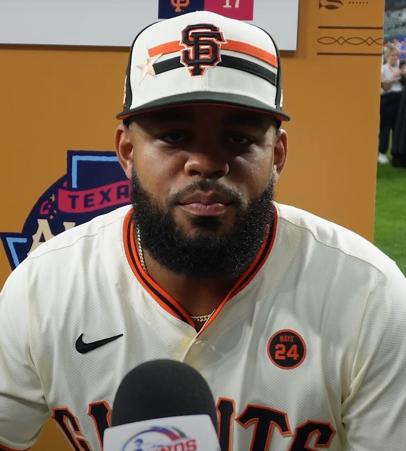
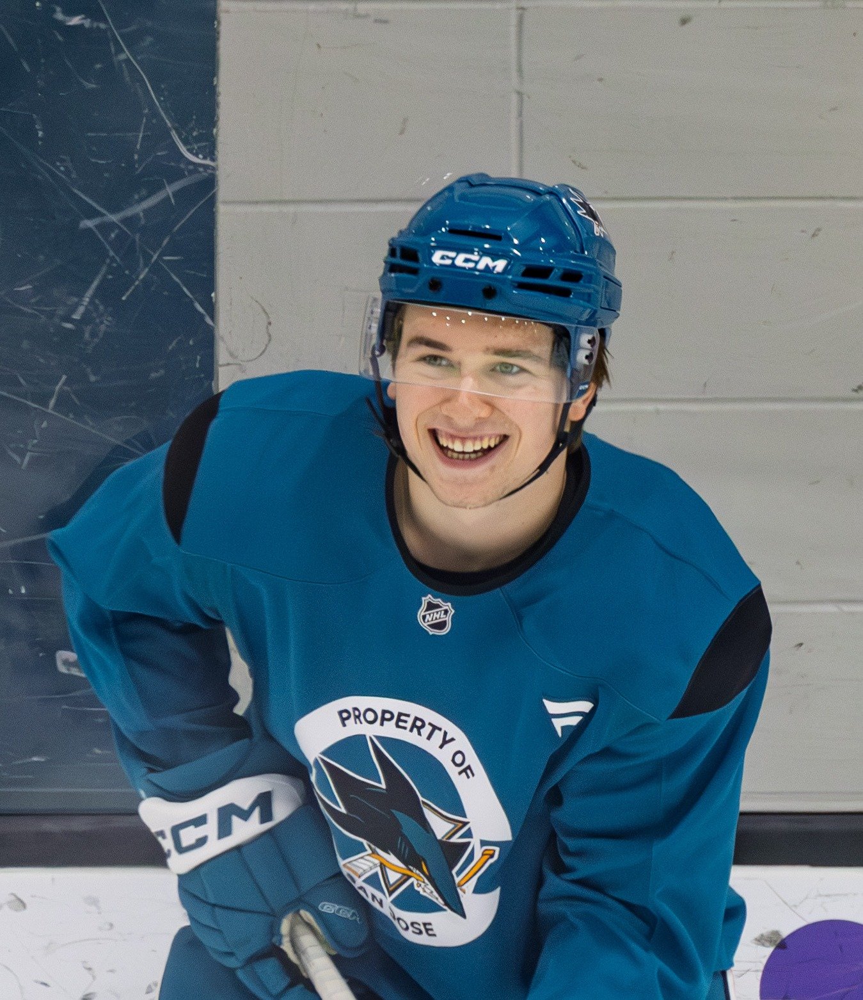
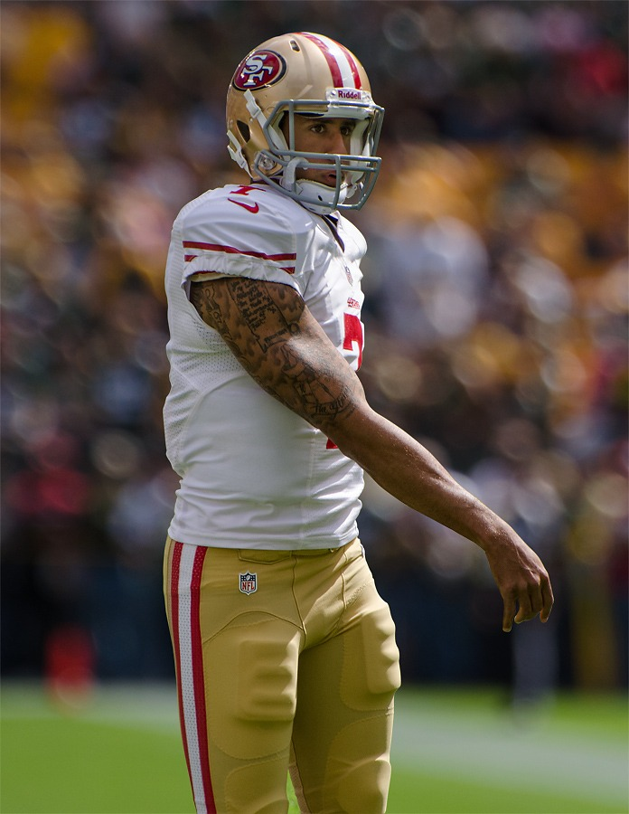
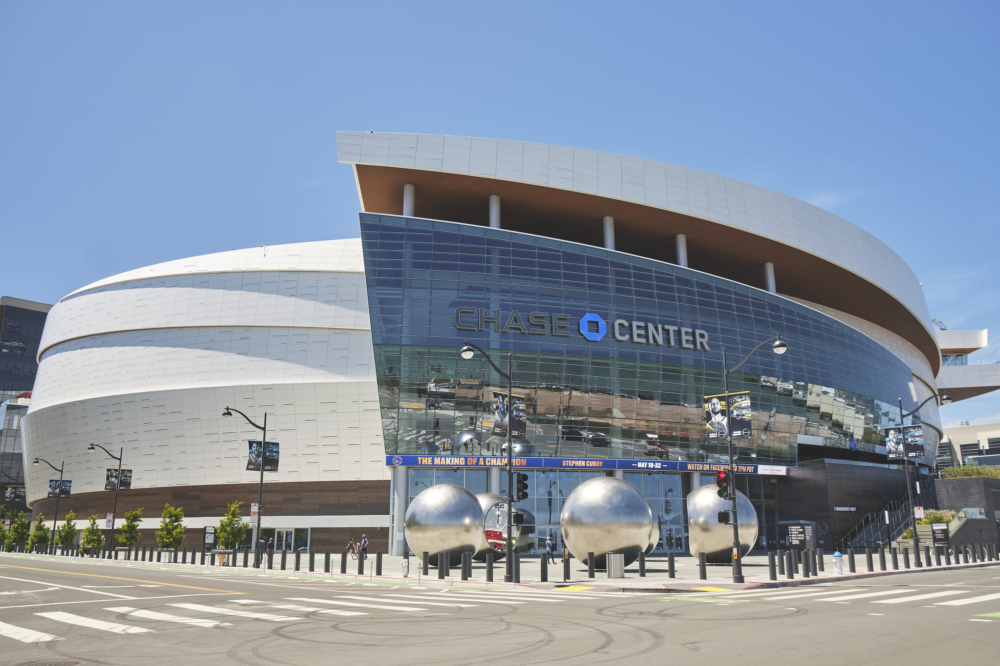

Latest Stories
Everything we have published, newest first. Opinion, recaps, history, and columns across every Bay Area team.

Two Hall of Famers, One Job: The Montana-Young Controversy and the Trade That Split the Bay
The 49ers had two HOF quarterbacks, then traded Joe Montana. How it happened, and why they were right.

LeBron and Curry on the Same Team: What It Would Mean for Their Legacies and the NBA
LeBron is leaving L.A. and the Warriors want him next to Steph. What it would really mean.

This Giants Season Is Over. Build Around Bryce Eldridge and Explain the Bullpen.
At 35-49, the year is done. The future is Eldridge, and Posey's no-leverage bullpen makes no sense.

Dylan Cease Nearly No-Hit One of the Worst Giants Teams I Can Remember
Eight and a third hitless innings and a 10-0 beatdown at home.

A Rookie Named Melton Made the A's Look Like a Beer-League Team, 6-1
Nine strikeouts from a kid on his sixth start.

I Didn't Like the Tony Vitello Hire, and I'm Not Going to Pretend Otherwise
Bold is not the same as smart.

The Giants Woke Up the Worst Offense in Baseball
A quiet Blue Jays lineup found life at Oracle Park.

Brandon Aiyuk Has Gone Full Antonio Brown, and It's Hard to Watch
The 49ers success story that curdled.

The 49ers Are Still Paying For Vegas
That overtime in Allegiant Stadium still shapes everything.
The Warriors Are Out of Easy Answers, and That's the Whole Story
The grace period the dynasty bought is finally over.

The Giants Keep Promising October. Oracle Park Is Still Waiting.
Fine does not fill the ballpark in September.

The Sharks Rebuild Finally Has a Pulse, and His Name Is Macklin Celebrini
Seven springs without playoff hockey, and suddenly the Tank matters.

The A's Play in Sacramento Now, and That's the Whole Ugly Story
A century of Oakland baseball, boxed into a Triple-A park.

The NFL Blackballed Colin Kaepernick for Kneeling, and Everyone Knows It
It was never about talent.

Why the Bay Area Is One of the Greatest Sports Regions
The big-picture case for the region.
Team of the Decade: When the 49ers Ran the NFL
Five Super Bowls and the gold standard of a generation.

73-9: The Best Regular Season Ever, and Then They Added Durant
The greatest record ever, a crushing Finals loss, and the answer.

From Rick Barry to the Splash Brothers
A 1975 upset and a modern dynasty that changed basketball.
Even-Year Magic: The Giants Dynasty of the Early 2010s
Three titles in five years, all in even years.

Barry Bonds: The Loudest Bat San Francisco Ever Saw
73 home runs and four straight MVPs.

Jeff Kent: The MVP Nobody Had to Like
The best offensive second baseman of his time.

Bochy's Wizardry and the Core Four Bullpen
How close games became championships.

Madison Bumgarner Owned the 2014 World Series
Five scoreless to close Game 7 on two days' rest.

The Catch, and the Dynasty It Started
Montana to Clark at Candlestick, 1982.

The Night Klay Thompson Scored 37 in a Quarter
Thirteen shots, thirteen makes, one quarter.

Welcome to Bay Area Sports Blog
What this blog is and why it exists.